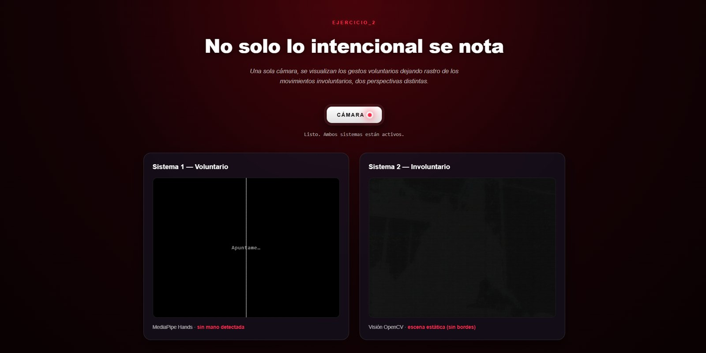

← Proyectos
06 / 08 · Interacción Digital / Visión Artificial
No solo lo intencional se nota
Descripción
Creé una experiencia web que divide la cámara en dos realidades: el gesto voluntario que dibuja y el movimiento involuntario que se ilumina.
